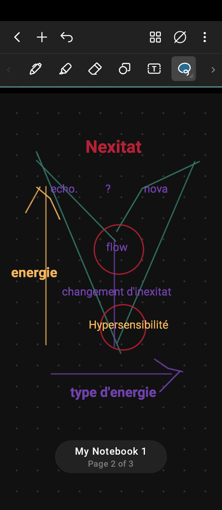

La Théorie des Inexitat
le mot Inexitas viens du latin i-nexus-itas
Les inexitat sont les deux état cohabitant et gérant l'énergie de diférentes façons

Image si dessus montrant un graphique avec comme absice Inexitat et ordoné l'énergie ou a l'inverse le stress
La théorie des Inexitat se base sur deux état:
Il se peut que les deux soit solicité lors de changement d'état (rapide) ou état de flow(Lent)
Flow
quand on solicité les deux état en même temps sensation
d'être dieux d'être rapide come le lièvre (animal)et réfléchie comme un
humain
Autres documents
seuil ou goufre des étapes